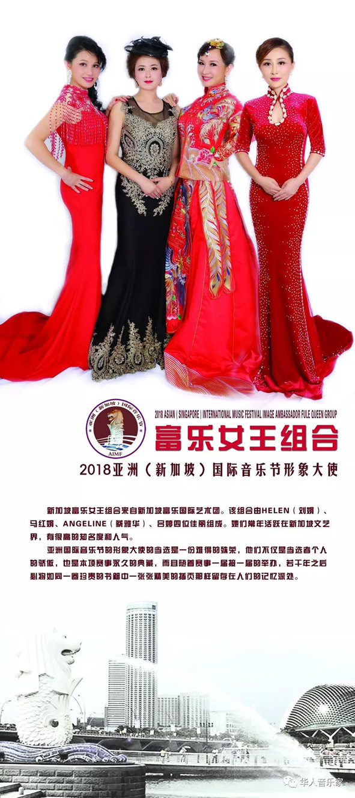
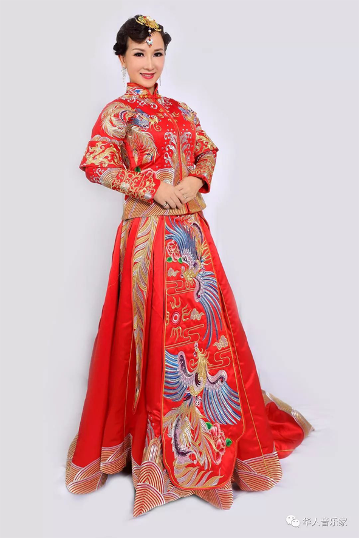
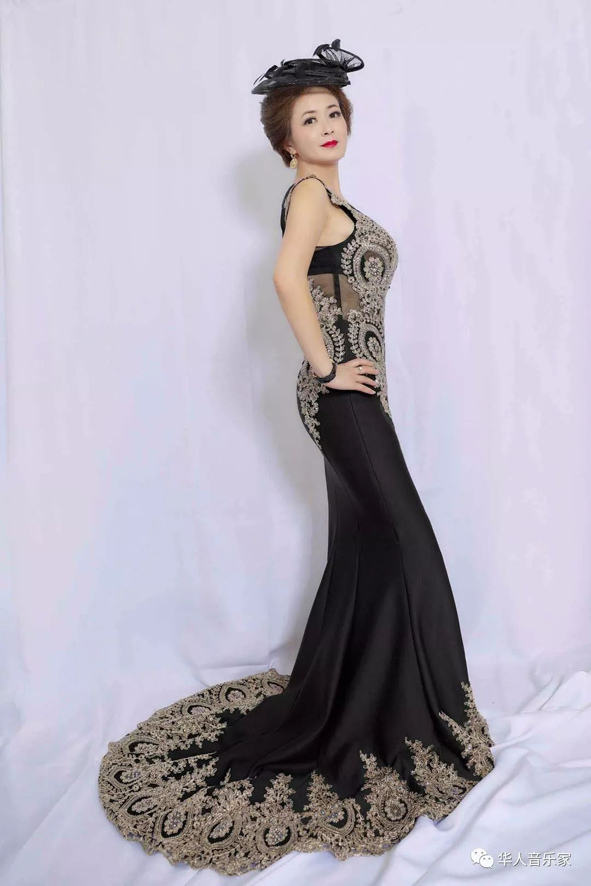
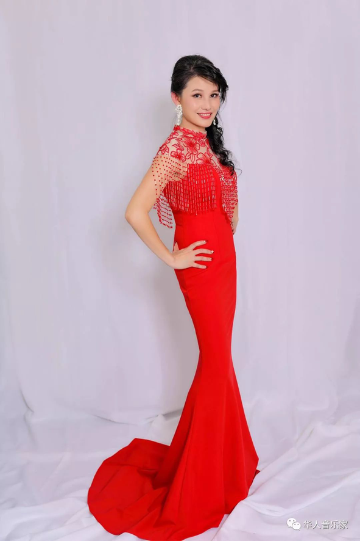
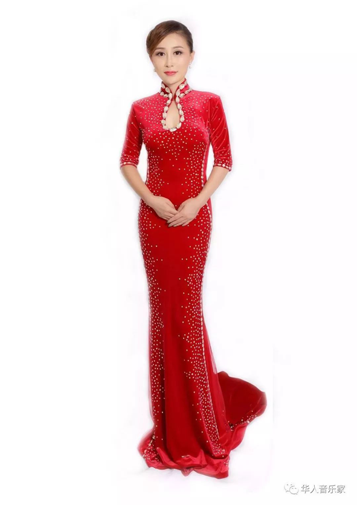

2018亚洲（新加坡）国际⾳音乐节
形象⼤大使⼈人选确定，新加坡富乐
⼥女女王组合独领⻛风骚
⾃自去年年⼗十⽉月份亚洲国际⾳音乐节组委会发布
征集第五届亚洲国际⾳音乐节形象⼤大使的启事之
后，海海内外⾃自荐者、推选者众多。经组委会层层
选拔，新加坡富乐⼥女女王组合⼒力力压群雄，成功当选
为本届亚洲国际⾳音乐节形象⼤大使。
新加坡富乐⼥女女王组合来⾃自新加坡富乐国际
艺术团。该组合由

Helen（刘娟）、⻢马红娟、Angeline（
蔡雅华）、吕婷四位佳丽组成。她们常年年
活跃在新加坡⽂文艺界，有很⾼高的知名度和⼈人⽓气。

Helen（刘娟）：新加坡富乐国际艺术团副
团⻓长。新加坡艺术⽂文化协会秘书⻓长。2015年年新加
坡旗袍选美⼤大赛荣获当届“华贵夫⼈人”⼤大奖。2016
年年新加坡世界夫⼈人选美⼤大赛荣获“典雅夫⼈人”⼤大
奖。2017年年“亚洲环球肚⽪皮舞”⼤大赛，荣获团体冠
军。Helen近年年来活跃于选美以及艺术⽂文化类舞
台。受邀出席电视台舞蹈类节⽬目录制，常以嘉
宾、评委、节⽬目策划⼈人身份出席⼤大型活动，是多
家国际选美机构形象代⾔言⼈人，知名品牌⾛走秀宣传
⼈人，在新加坡本地具有极⾼高⼈人⽓气。现投身于舞蹈
教学，主教形体礼仪，模特⾛走秀，⺠民族舞蹈，肚
⽪皮舞等。

马红娟：新加坡富乐国际艺术团舞蹈演
员。北北京宝丽光⽂文化传播有限公司投资创办⼈人。
东⽅方环球⽂文化学校及幼稚园投资创办⼈人。多年年从
事经营⽂文化娱乐⾏行行业。移居新加坡多年年，⽬目前经
营（FRAGRANCE EAST PTE LTD）东⾹香有限公
司与美国分公司新加坡Blue Voute Pte Ltd。

Ngeline（蔡雅华）：酷爱中国古典⾳音乐，特
⻓长古筝、声乐、舞蹈。活跃于⾛走秀、舞蹈及合唱
类⼤大型表演活动中。拉花艺术作品多次在⼤大型展
会上展出。

吕婷：越剧演员，驻唱歌⼿手，从⼩小接受中国
传统艺术训练，曾在杭州各⼤大舞台参加演出，舞
蹈根底深厚。曾获“银时代⼿手膜⼤大赛”冠军。移居
新加坡后多次参加⾛走秀类活动及⼤大型⾳音乐会。现
为新加坡富乐国际艺术团歌唱演员。富乐⼥女女王组
合成员之⼀一。